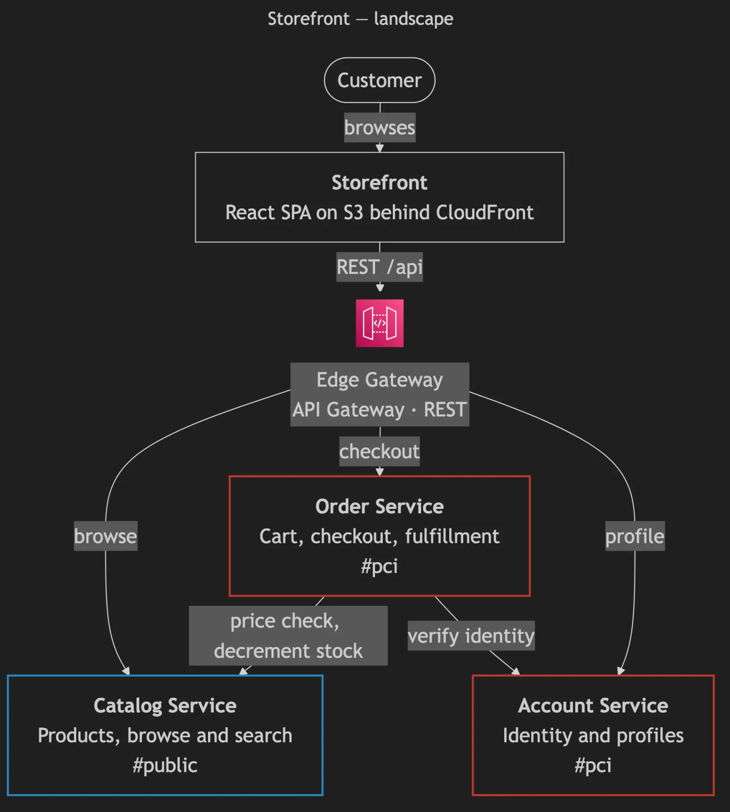
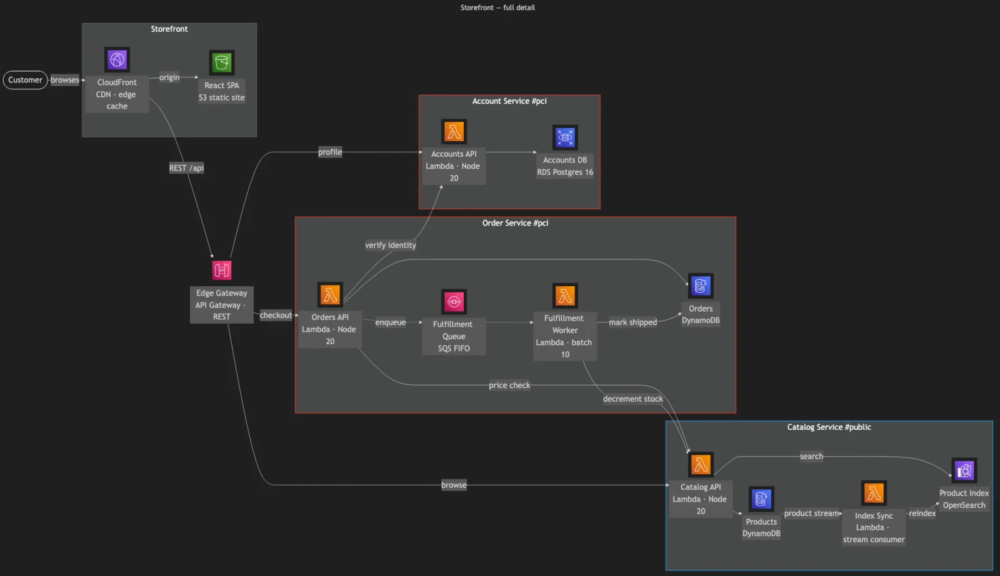
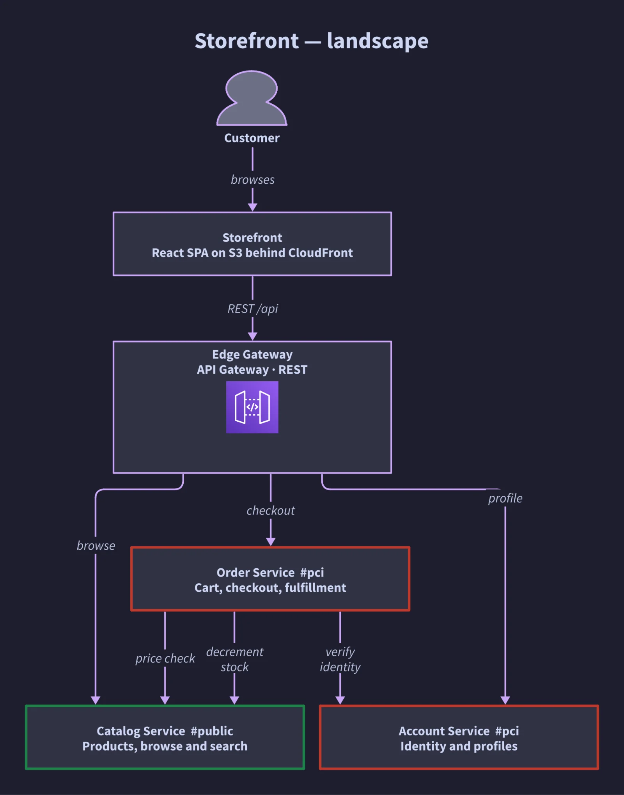
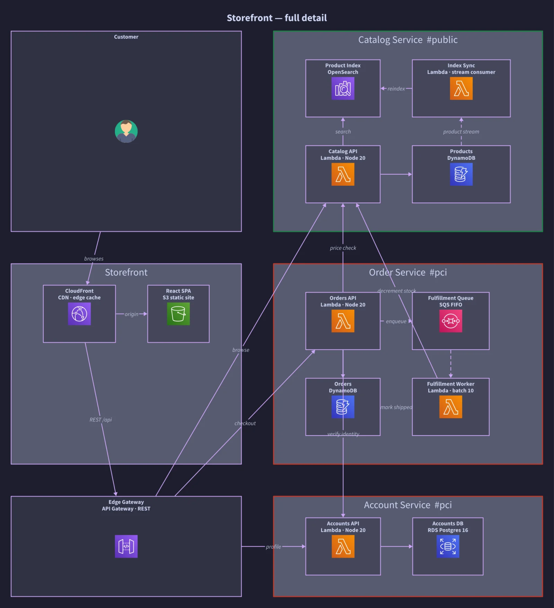
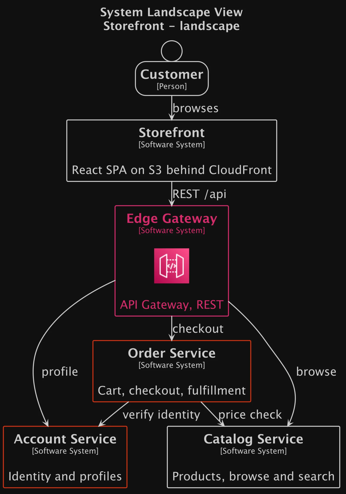
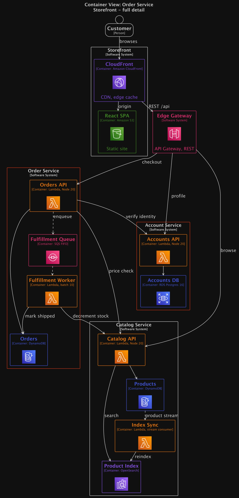
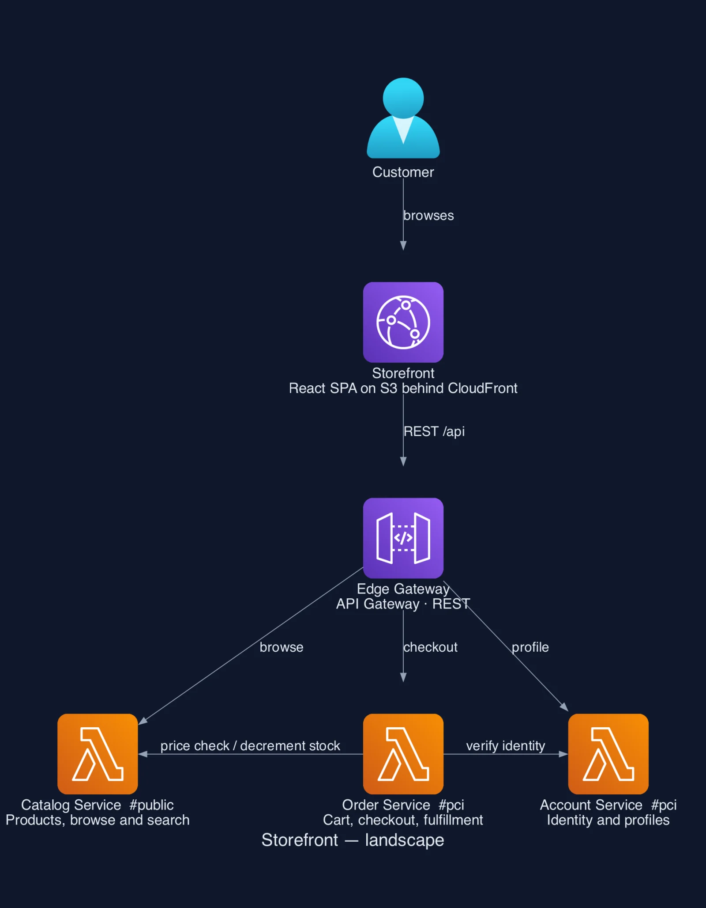
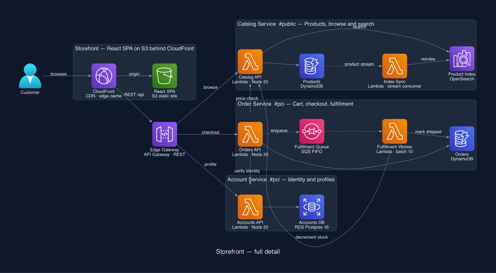

How we tested
Same for every toolEach tool got its own agent, which saw neither the others' work nor Squinch's render, and was told to do the tool justice. Run in September 2026.
- Two pictures. The landscape — the systems as single boxes — and full detail, with every system opened up. From one model if the tool can.
- The tool's own means. Its built-in dark theme, its AWS icons, the layout engines that ship free with it.
- A shape that fits a page. Between 16:9 and 3:4, legible at this width, with a handful of iterations to get there.
At a glance
From the runs below| Source | Both pictures from one model | Layout control | AWS icons | Dark theme | From text to PNG | |
|---|---|---|---|---|---|---|
| Squinch | 144 lines, seven views | Yes — a view is five lines | Relative hints — rows, cols, place, a direction per frame |
Bundled | Built in | One npm package |
| Mermaid | 90 lines, two files | No — two hand-kept files | Direction and spacing | Fetched at render | Built in | One npm package + headless Chromium |
| D2 | 172 lines, one file | Partly — one file, cross-system edges written twice | Direction, or a grid — and a grid stops routing edges | Fetched by URL; no OpenSearch icon | Built in | One binary |
| Structurizr | 90 lines, one file | Yes — the C4 model is the point | Direction and spacing — the rest is dragging boxes in a browser | Fetched at render | Undocumented export flag | Java, then PlantUML, then Graphviz — about 900 MB |
| Python diagrams | 106 lines, two files | No — two scripts | Raw Graphviz attributes | Bundled | None — set by hand | pip + Graphviz |
Squinch
0.8 · one model, seven views

What it took
One 144-line file that also holds five more views. Full detail is the landscape plus one line, expand *.
Holds up
- The three services share a row because the source says so:
rows [catalog orders accounts]. - Wires turn at right angles and cross no title or label.
- Name and technology are separate lines; tags are part of the language.
Falls short
- It is new. Mermaid renders inside GitHub and Notion; a Squinch diagram is an image you commit.
- No Google Cloud icons — they cannot be redistributed.
- A language of its own: written by agents, but one more thing in the repo.
Mermaid
11.17 · flowchart, dagre{kind=link}

{kind=link}

What it took
A flowchart with subgraphs and icon nodes. Both files parsed first time; a page-shaped full detail took four tries at spacing and wrap width, the only layout controls there are.
Holds up
- Rendered first try, from short, readable source.
- The landscape is clean, with no crossings.
- Renders natively on GitHub — though not with these icons.
Falls short
- The services form a staircase: Orders calls Catalog, so Catalog ranks after it, and nothing can say otherwise.
- Labels wrap as one block — “Lambda · Node / 20” — and chips sit on their own wires.
- Two wires run through the Order Service frame and merge.
D2
0.9 · ELK, then a grid{kind=link}

{kind=link}

What it took
One file, but full deletes the landscape's eight edges and rewrites them between containers. With ELK alone it came out 2004 × 8988, so full detail is a grid — D2's one way to set rows.
Holds up
- A single binary that renders in half a second.
- The ELK landscape is clean and orthogonal, with backed labels.
Falls short
- Inside a grid, edges are not routed: each is a straight line. “verify identity” runs through the Orders database and hides another edge.
- Grid cells stretch to match, so Customer and Edge Gateway become large empty boxes.
- Every cross-system edge is written twice, and nothing checks the two agree.
Structurizr
DSL → PlantUML → Graphviz{kind=link}

{kind=link}

What it took
The only other tool here with a real model: one workspace, two views. But the CLI draws nothing itself — it exports PlantUML, which shells out to Graphviz — and full detail is either three screens tall or 4:1 and unreadable.
Holds up
- Model once, view many times: the idea Squinch shares, and it works.
- Precise validation errors.
- The landscape is clean.
Falls short
- Layout is a direction and two spacings. Its real answer is dragging boxes in a browser, which no agent can do.
- The landscape silently drops “decrement stock”: two edges between the same systems merge into one.
- Two wires cross boundary titles.
Python diagrams
0.25 · Graphviz dot{kind=link}

{kind=link}

What it took
The best-looking of the four, and the most Graphviz knowledge to get there: splines, constraint="false", and a patched private attribute so larger labels clear their icons.
Holds up
- The icons: bundled, official, large, instantly recognisable.
- Left to right, the services read as three tidy lanes.
Falls short
- “decrement stock” loops under the whole picture and back; four iterations could not remove it.
- Edge labels have no backing and land on frame titles.
- No node for “a system”, so in the landscape a Lambda icon stands for a whole service.